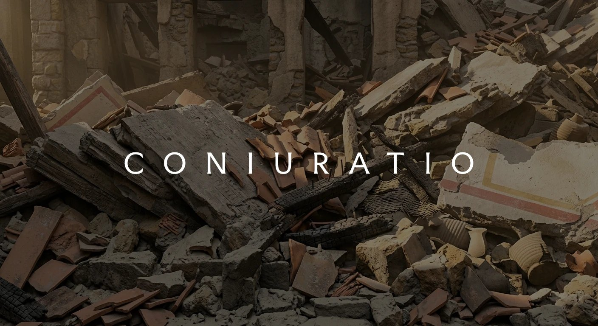
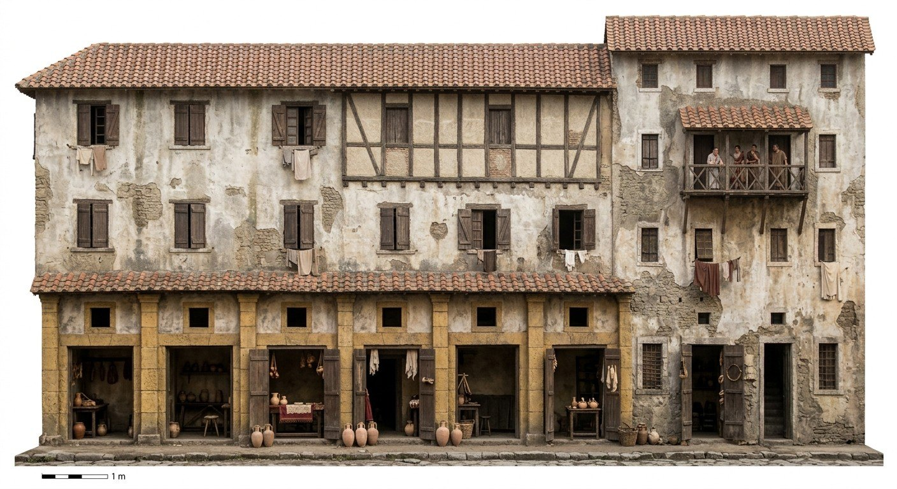
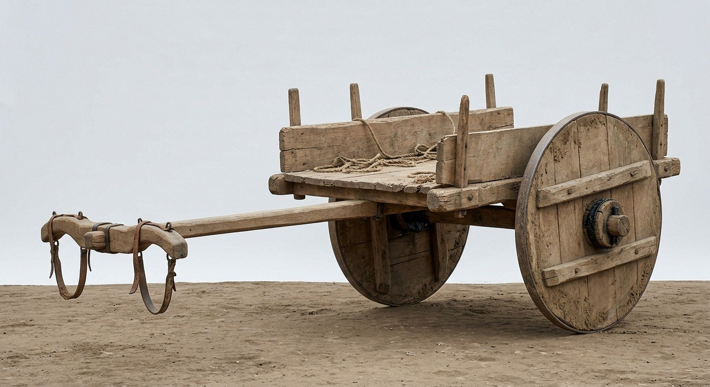
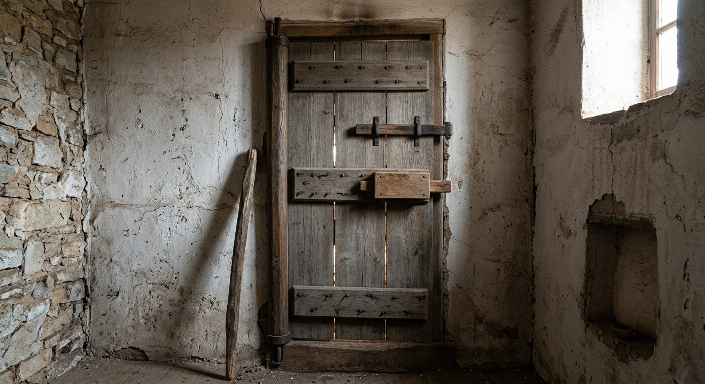
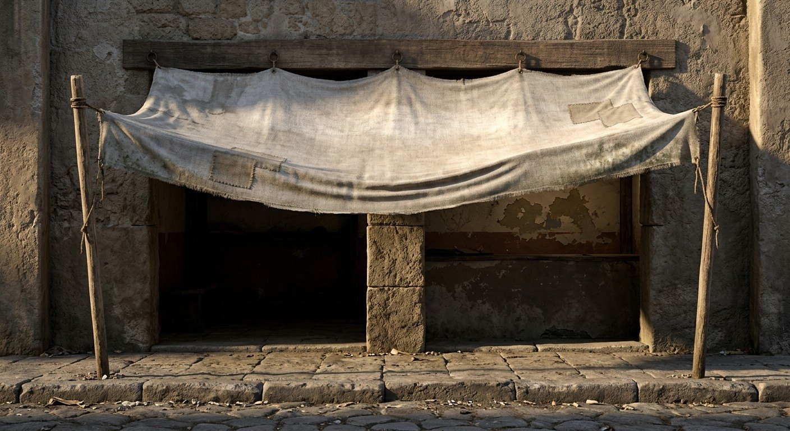
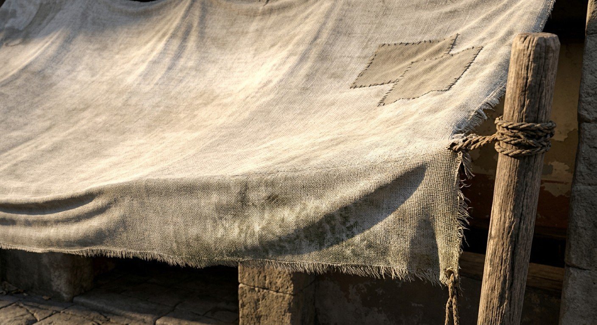
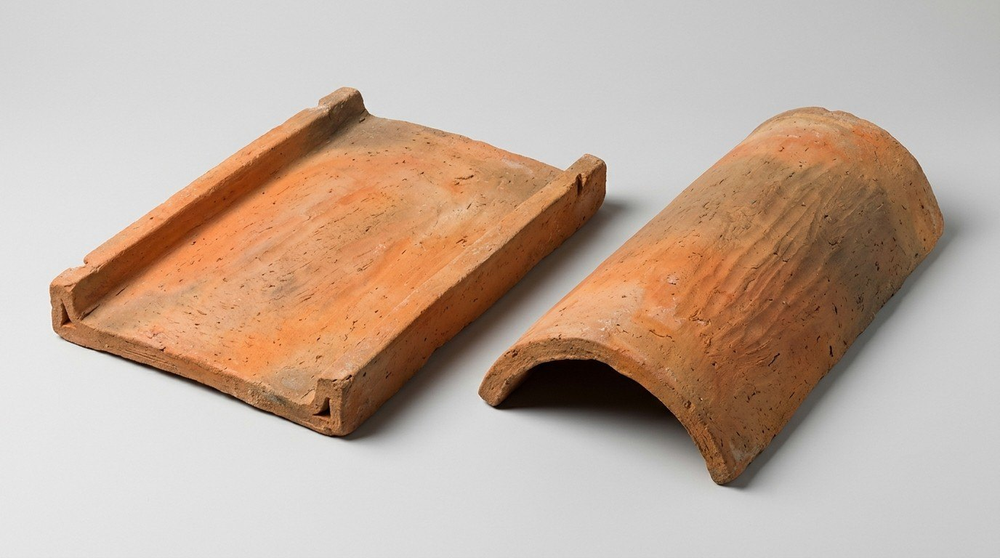
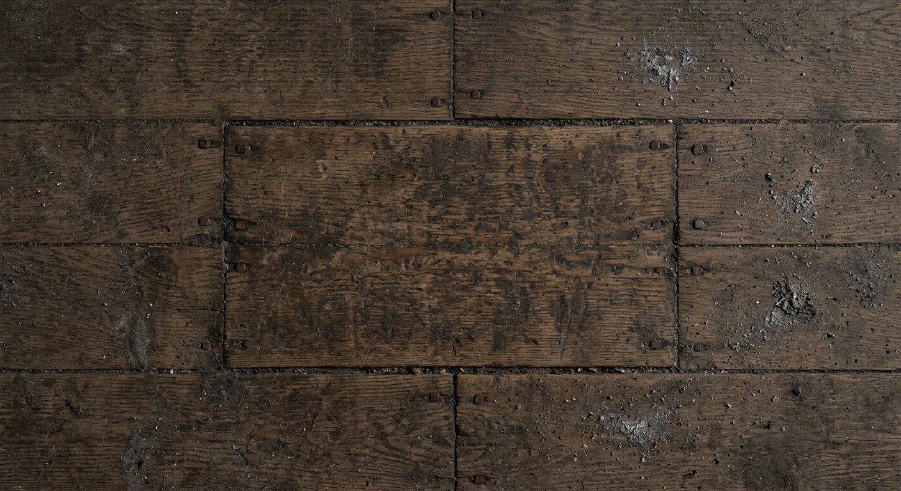
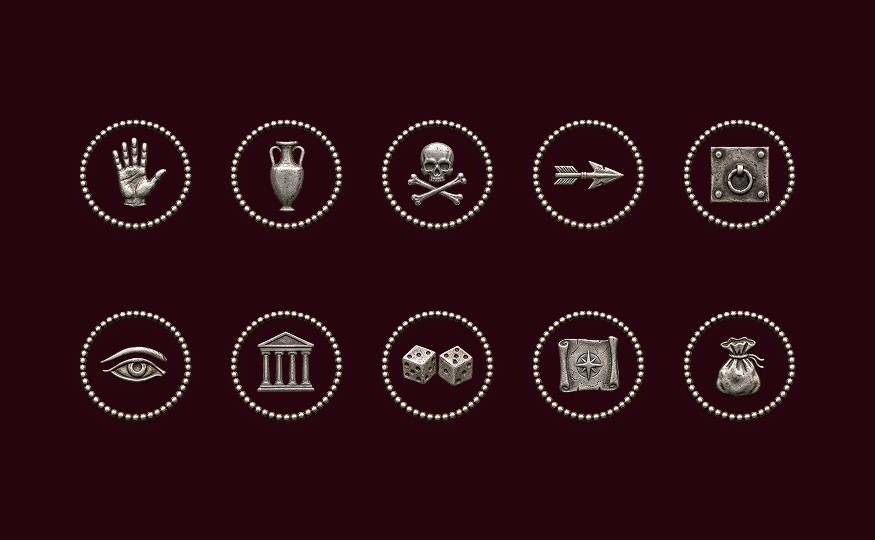
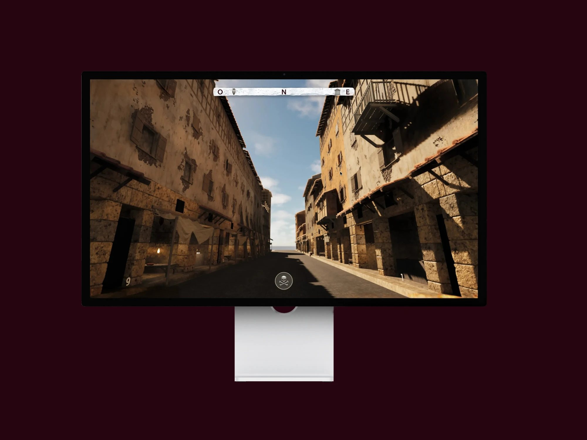

Work/Personal
In development
Coniuratio
A game I'm building on my own, interface included. Ancient Rome, 63 BC: the Catilinarian conspiracy.

The idea
Coniuratio aims to be a game like Kingdom Come: Deliverance II, but set in ancient Rome: in the 1st century BC, during Catiline's conspiracy of 63 BC.
Where the game comes from and what you want players to feel. Tell the premise the way you'd tell a friend.
How it plays
The main mechanics, in a few lines.
- Mechanic 1: what the player does.
- Mechanic 2: what makes it different.
- Mechanic 3: how you progress.
World and style
These images are working tools. The idea is a three-step workflow: a history agent built on Claude checks the game's development and gives me the prompts, Gemini generates the reference images, then places and objects are modelled in Blender.
Places, objects and materials from the game world.







Game interface
Early ideas for the interface icons.
How you designed the HUD, menus and tutorial: what information the player needs and when, and how you guide them without explaining everything.
If you had other people try the game, describe what you changed after watching them.


Development log
- Month 2026First test with five people: rewrote the tutorial.
- Month 2026Playable prototype of the first level.
- Month 2025Visual style defined, first animations.
- Month 2025Idea, design document and first sketches.
Next steps
What's missing and when you plan to release it, even just a demo.